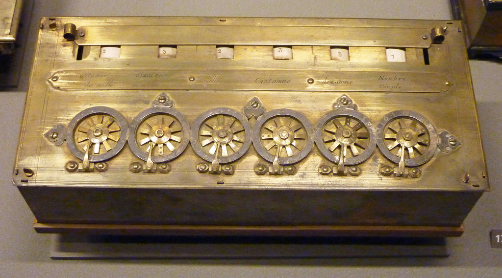

Komputer adalah perangkat elektronik yang memiliki kemampuan untuk mengolah data, menjalankan program-program, dan melakukan berbagai tugas yang diprogram oleh pengguna.Komputer bekerja dengan mengambil data sebagai input, memproses data tersebut sesuai dengan instruksi dalam program, dan menghasilkan output yang relevan. Mereka dapat melakukan operasi matematika, logika, dan manipulasi data dengan kecepatan dan akurasi yang luar biasa, dan mereka dapat digunakan dalam berbagai bidang seperti bisnis, ilmu pengetahuan, pendidikan, hiburan, dan lainnya.
Di bawah ini adalah beberapa titik penting dalam sejarah asal-usul komputer:
Abakus (sekitar 3000 SM) : Abakus adalah salah satu perangkat perhitungan awal yang digunakan oleh berbagai budaya di seluruh dunia, termasuk Mesir dan Mesopotamia.
Abakus
Mesin Hitung Pascal (1642) : Blaise Pascal, seorang ilmuwan Prancis, menciptakan mesin hitung mekanis pertama, yang digunakan untuk menjumlahkan dan mengurangkan angka-angka.

Mesin Hitung Pascal
Mesin Babbage (1820-an - 1830-an) : Charles Babbage, seorang matematikawan Inggris, merancang beberapa mesin hitung mekanis, termasuk Mesin Perbedaan dan Mesin Analitis. Mesin Analitis adalah cikal bakal komputer modern dengan kemampuan berprogram.
 Mesin Babage
Mesin Turing (1936) : Alan Turing, seorang matematikawan Inggris, merancang konsep "mesin Turing," yang mengilustrasikan ide dasar dari komputer universal. Konsep ini menjadi dasar bagi banyak komputer modern.
Mesin Turing
ENIAC (1946) : ENIAC (Electronic Numerical Integrator and Computer) adalah komputer pertama yang berbasis elektronik dan dapat diatur ulang. Itu digunakan untuk menghitung tabel tembakan artileri selama Perang Dunia II.
ENIAC
Mesin Babage
Mesin Turing (1936) : Alan Turing, seorang matematikawan Inggris, merancang konsep "mesin Turing," yang mengilustrasikan ide dasar dari komputer universal. Konsep ini menjadi dasar bagi banyak komputer modern.
Mesin Turing
ENIAC (1946) : ENIAC (Electronic Numerical Integrator and Computer) adalah komputer pertama yang berbasis elektronik dan dapat diatur ulang. Itu digunakan untuk menghitung tabel tembakan artileri selama Perang Dunia II.
ENIAC
Sejak itu, komputer terus berkembang dengan pesat, mengalami peningkatan dalam ukuran, kecepatan, kemampuan pemrosesan, dan fungsionalitasnya. Sejarah komputer adalah kisah perkembangan teknologi yang luar biasa dan inovasi yang telah mengubah dunia secara signifikan.